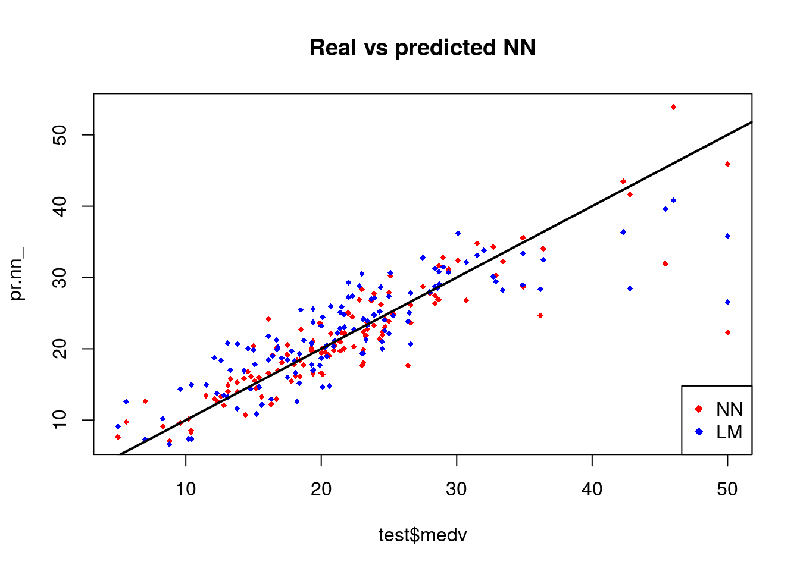
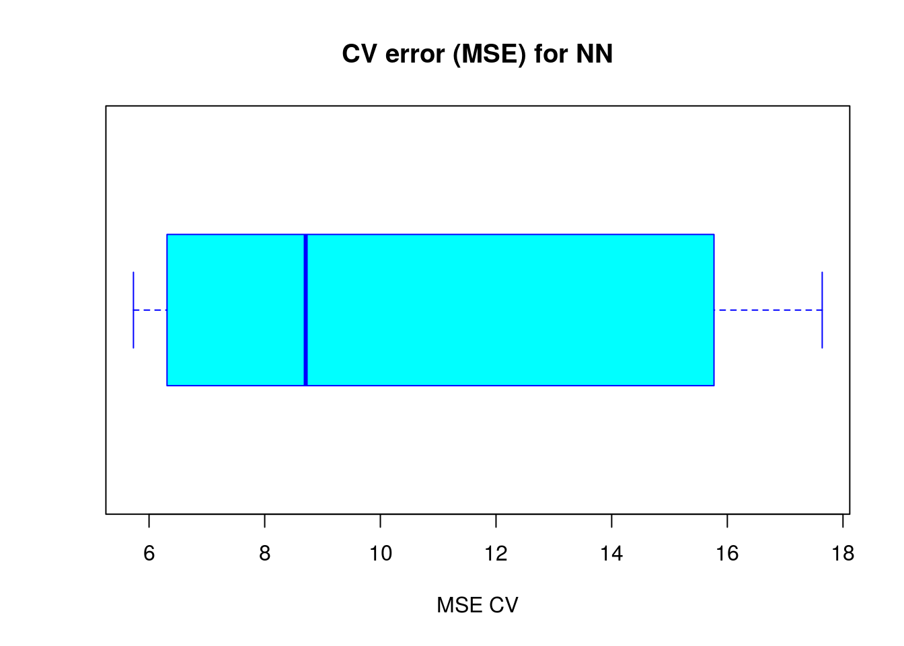

11 Artificial neural networks
11.1 Neural Networks
What are artificial neural networks (ANNs)?
ANN is actually an old idea but it came back into vogue recently and it is the state of the art technique for machine learning. The goal of ANN algorithms is to mimmick the functions of a neuron (Figure 11.1) and neuronal networks.

Figure 11.1: Neuronal computation
Computational representation of a neuron (Figure 11.2) aims to mimmick the biological input-and-activation architecture of a neuron (Figure 11.1). A single unit of a computational neuron is also called a perceptron or ptrons. Ptrons have a nonlinear activation function (e.g a logistic function) which determines their output value based upon the values of their inputs.
Figure 11.2: Perceptron
Architecture of ANNs
ANNs are built from ptrons. Ptrons have one or more inputs, an activation function and an output (Figure Perceptron). An ANN model is built up by combining ptrons in structured layers. Ptrons in a given layer are independent of each other, but each of them connect to all the ptrons in the next layer (Figure Neural Network Modeling).
The input layer contains a ptron for each input variable. One or more hidden layers contain a user defined number of ptrons. Each ptron in the first hidden layer receives an input from the each ptron in the input layer. If there is a second hidden layer, each ptron in this layer receives an input from each ptron in the first hidden layer, and so on with additional layers. The output layer contains a ptron for each response variable (usually one, sometimes more in multivariate response situations). Each output ptron receives one input from each ptron in the final hidden layer
Important: The connections between ptrons are weighted. The magnitude of the weight controls the strength of the influence of that input on the receiving ptron. The sign of the weight controls whether the influence is stimulating or inhibiting the signal to the next layer.
The weights are somewhat analogous to the parameters of a linear model. There is also a bias adjustment that represents the base value of a ptron and is analogous to the intercept in a linear model. If the inputs are near zero, the bias ensures that the output is near average. Due to the network-like nature of the ANN a complex, non-linear relationship exist between the predictors and response.
Acknowledgement: aspects of the above discussion are from: https://rpubs.com/julianhatwell/annr
Forward propagation
Figure 11.3 represents a simple ANN, where we have an input later (layer 1) with three ptrons and a base unit, one hidden layer (layer 2) again with three prtons and a base unit, and an output layer (layer 3) where the \(h_{\theta}\)(x) is computed.
This method of computing \(h_{\theta}\)(x) is called Forward Propagation.

Figure 11.3: Neural Network Modeling
where
\(a_i^{(j)}\)= activation of i in layer j
\(\theta^i\) = matrix of weights controlling function mapping from layer j to layer j+1
\[\begin{align} a_1^{(2)} &= g (\theta_{10}^{(1)}x_0 + \theta_{11}^{(1)}x_1 + \theta_{12}^{(1)}x_2+ \theta_{13}^{(1)}x_3)\\ a_2^{(2)} &= g (\theta_{20}^{(1)}x_0 + \theta_{21}^{(1)}x_1 + \theta_{22}^{(1)}x_2+ \theta_{23}^{(1)}x_3)\\ a_3^{(2)} &= g (\theta_{30}^{(1)}x_0 + \theta_{31}^{(1)}x_1 + \theta_{32}^{(1)}x_2+ \theta_{33}^{(1)}x_3)\\ h_{\theta}(x) &= a_1^{(3)}=g (\theta_{10}^{(2)}a_0^{(2)} + \theta_{11}^{(2)}a_1^{(2)} + \theta_{12}^{(1)}a_2^{(2)} + \theta_{13}^{(2)}a_3^{(2)})\\ \end{align}\]
Vectorized notations of inputs and activations.
\[\begin{align} x &= \begin{bmatrix}x_o \\ x_1\\ x_2\\ x_3 \end{bmatrix}\\ z^{(2)} &= \begin{bmatrix} z_1^{(2)}\\ z_2^{(2)}\\ z_3^{(2)} \end{bmatrix} \end{align}\]
Vectorized representation of activation of hidden layer and activation layer.
\[\begin{align} z^{(2)} &= \Theta^{(1)} a^{(1)}\\ a^{(2)} &= g(z^{(2)}) \end{align}\]
\[\begin{align} z^{(3)} &= \Theta^{(2)} a^{(2)}\\ h_\Theta(x) &= a^{(3)} = g(z^{(3)}) \end{align}\]
Why ANN?
Consider the supervised learning problems below (Figure 11.4). The first two are straight forward cases.Figure 11.4: Why ANN
Whereas for the third we could probably apply a logistic regression with a lot of nonlinear features like this
\[ Y_i = g(\theta_0 + \theta_1 x_1 + \theta_2 x_2+ \theta_3 x_1x_2+ \theta_4 x_i^2x_2 + \theta_5 x_i^3x_2+ \theta_6 x_i^3x_2^2 \dots)\]
i.e. if we include enough polynomials we could arrive at an hypothesis that will separate the two classes.
This could perfectly work well if we just have two features, such as x1 and x2 but for almost all machine learning problems we usually have more than two features. Importantly if the number of features increase the number of quadratic terms increase as a function of \(n^2/2\); where n is the number of features.
This would result in overfitting if the number of features increase.
Because ANN has felixibility to derive complex features from each layer of ptrons, it can be applied to any complex functional relationship and more importantly unlike generalized linear models (GLMs) it is not necessary to prespecify the type of relationship between covariates and response variables as for instance as linear combination. This makes ANN a valuable statistical tool.
Observed data are used to train the neural network and the neural network learns an approximation of the relationship by iteratively adapting its parameters.
Figure 11.5 shows an example of a simple logical AND ptron architecture.
Figure 11.5: Simple Logical AND ANN
Cost function and back propagation
Cost function of linear models
\[ \begin{equation*} CF(\theta_{0},\theta_{1}) = 1/2n\sum_{i=1}^{n} (h_{\theta}(x^i) - y^i)^2 \end{equation*} \] Matrix solution to minimise the cost function in linear models
\[ \hat{\boldsymbol{\beta}} = (\mathbf{X}^\top \mathbf{X})^{-1} \mathbf{X}^\top \mathbf{Y} \]
Cost funciton in ANN (it is a pretty scarry equation)
\[ \begin{equation*} CF(\Theta) = -1/m \Bigg[\sum_{i=1}^{m}\sum_{k=1}^{K} y_k^{(i)}log(h_\Theta(x^{(i)}))_k+(1-y_k^{(i)})log(1-(h_\Theta(x^{(i)}))_k)\Bigg] \end{equation*} \] \[ \begin{equation*} +\lambda/2m\sum_{l=1}^{L-1}\sum_{i=1}^{s_l}\sum_{j=1}^{S_{l+1}}(\Theta_{ji}^{(l)})^2 \end{equation*} \] We have to minimise this ANN cost function and it is done by back propogation. It is termed back propogation because of the fact that we compute the error from the outer most layer and go backwards.
Acknowledgement: The above example and discussion is from Prof. Andrew Ng’s coursera session on ANN
Example model
This example uses the Boston data from the MASS package which contains a number of predictors of median property values in suburbs of Boston, MA, USA. The code used is based on Alice, (2015)
The Boston dataset is a collection of data about housing values in the suburbs of Boston. Our goal is to predict the median value of owner-occupied homes (medv) using all the other continuous variables available.
library(neuralnet)
library(nnet)
library(NeuralNetTools)
library(MASS)
library(ISLR)
library(caTools) # sample.split
library(boot) # cv.glm
library(faraway) # compact lm summary "sumary" function##
## Attaching package: 'faraway'## The following objects are masked from 'package:boot':
##
## logit, melanomalibrary(caret) # useful tools for machine learning## Loading required package: lattice##
## Attaching package: 'lattice'## The following object is masked from 'package:faraway':
##
## melanoma## The following object is masked from 'package:boot':
##
## melanoma## Loading required package: ggplot2library(corrplot)## corrplot 0.84 loadedset.seed(500)
library(MASS)
data <- BostonChecking whether there are any missing data.
apply(data,2,function(x) sum(is.na(x)))## crim zn indus chas nox rm age dis rad
## 0 0 0 0 0 0 0 0 0
## tax ptratio black lstat medv
## 0 0 0 0 0We randomly splitt the data into a train and a test set and then we fit a linear regression model and test it on the test set.
index <- sample(1:nrow(data),round(0.75*nrow(data)))
train <- data[index,]
test <- data[-index,]
lm.fit <- glm(medv~., data=train)
summary(lm.fit)##
## Call:
## glm(formula = medv ~ ., data = train)
##
## Deviance Residuals:
## Min 1Q Median 3Q Max
## -14.9143 -2.8607 -0.5244 1.5242 25.0004
##
## Coefficients:
## Estimate Std. Error t value Pr(>|t|)
## (Intercept) 43.469681 6.099347 7.127 5.50e-12 ***
## crim -0.105439 0.057095 -1.847 0.065596 .
## zn 0.044347 0.015974 2.776 0.005782 **
## indus 0.024034 0.071107 0.338 0.735556
## chas 2.596028 1.089369 2.383 0.017679 *
## nox -22.336623 4.572254 -4.885 1.55e-06 ***
## rm 3.538957 0.472374 7.492 5.15e-13 ***
## age 0.016976 0.015088 1.125 0.261291
## dis -1.570970 0.235280 -6.677 9.07e-11 ***
## rad 0.400502 0.085475 4.686 3.94e-06 ***
## tax -0.015165 0.004599 -3.297 0.001072 **
## ptratio -1.147046 0.155702 -7.367 1.17e-12 ***
## black 0.010338 0.003077 3.360 0.000862 ***
## lstat -0.524957 0.056899 -9.226 < 2e-16 ***
## ---
## Signif. codes: 0 '***' 0.001 '**' 0.01 '*' 0.05 '.' 0.1 ' ' 1
##
## (Dispersion parameter for gaussian family taken to be 23.26491)
##
## Null deviance: 33642 on 379 degrees of freedom
## Residual deviance: 8515 on 366 degrees of freedom
## AIC: 2290
##
## Number of Fisher Scoring iterations: 2pr.lm <- predict(lm.fit,test)
MSE.lm <- sum((pr.lm - test$medv)^2)/nrow(test)The sample(x,size) function simply outputs a vector of the specified size of randomly selected samples from the vector x. By default the sampling is without replacement: index is essentially a random vector of indeces.
Since we are dealing with a regression problem, we are going to use the mean squared error (MSE) as a measure of how much our predictions are far away from the real data.
Before fitting a neural network, we need to be prepare them to train and tune.
maxs <- apply(data, 2, max)
mins <- apply(data, 2, min)It is important to normalize the data before training a neural network. Avoiding normalization may lead to useless results or to a very difficult training process (most of the times the algorithm will not converge before the number of maximum iterations are allowed). There are different methods to choose to scale the data (z-normalization, min-max scale, etc…).
Here we have chosen to use the min-max method and scale the data in the interval [0,1]. Usually scaling in the intervals [0,1] or [-1,1] tends to give better results. We therefore scale and split the data before moving on:
scaled <- as.data.frame(scale(data, center = mins, scale = maxs - mins))
train_ <- scaled[index,]
test_ <- scaled[-index,]Scale returns a matrix that needs to be coerced into a data.frame.
library(neuralnet)
n <- names(train_)
f <- as.formula(paste("medv ~", paste(n[!n %in% "medv"], collapse = " + ")))
nn <- neuralnet(f,data=train_,hidden=c(5,3),linear.output=T)There are no fixed rules as to how many layers and neurons to use although there are several more or less accepted rules of thumb. Usually, one hidden layer is enough for a vast numbers of applications. As far as the number of neurons is concerned, it should be between the input layer size and the output layer size, usually 2/3 of the input size.
Since this is a toy example, we are going to use 2 hidden layers with this configuration: 13:5:3:1. The input layer has 13 inputs, the two hidden layers have 5 and 3 neurons and the output layer has a single output since we are doing regression.
The formula y~. is not accepted in the neuralnet() function. You need to first write the formula and then pass it as an argument in the fitting function. The hidden argument accepts a vector with the number of neurons for each hidden layer, while the argument linear.output is used to specify whether we want to do regression linear.output=TRUE or classification linear.output=FALSE
This is the graphical representation of the model with the weights on each connection:
plot(nn)The black lines show the connections between each layer and the weights on each connection while the blue lines show the bias term added in each step. The bias can be thought as the intercept of a linear model.
The net is essentially a black box so we cannot say that much about the fitting, the weights and the model. Suffice to say that the training algorithm has converged and therefore the model is ready to be used.
Now we can try to predict the values for the test set and calculate the MSE. Remember that the net will output a normalized prediction, so we need to scale it back in order to make a meaningful comparison (or just a simple prediction).
pr.nn <- compute(nn,test_[,1:13])
pr.nn_ <- pr.nn$net.result*(max(data$medv)-min(data$medv))+min(data$medv)
test.r <- (test_$medv)*(max(data$medv)-min(data$medv))+min(data$medv)
MSE.nn <- sum((test.r - pr.nn_)^2)/nrow(test_)we then compare the two MSEs
print(paste(MSE.lm,MSE.nn))## [1] "21.6297593507225 15.7518370200153"par(mfrow=c(1,2))
plot(test$medv,pr.nn_,col='red',main='Real vs predicted NN',pch=18,cex=0.7)
abline(0,1,lwd=2)
legend('bottomright',legend='NN',pch=18,col='red', bty='n')
plot(test$medv,pr.lm,col='blue',main='Real vs predicted lm',pch=18, cex=0.7)
abline(0,1,lwd=2)
legend('bottomright',legend='LM',pch=18,col='blue', bty='n', cex=.95)
The net is doing a better work than the linear model at predicting medv. Once again, be cautious because this result depends on the train-test split performed above. Below, after the visual plot, we are going to perform a fast cross validation in order to be more confident about the results.
A first visual approach to the performance of the network and the linear model on the test set is plotted.
By visually inspecting the plot we can see that the predictions made by the neural network are (in general) more concetrated around the line (a perfect alignment with the line would indicate a MSE of 0 and thus an ideal perfect prediction) than those made by the linear model.
A perhaps more useful visual comparison is plotted.
plot(test$medv,pr.nn_,col='red',main='Real vs predicted NN',pch=18,cex=0.7)
points(test$medv,pr.lm,col='blue',pch=18,cex=0.7)
abline(0,1,lwd=2)
legend('bottomright',legend=c('NN','LM'),pch=18,col=c('red','blue'))
Cross validation is another very important step of building predictive models. While there are different kind of cross validation methods, the basic idea is repeating the following process a number of time:
Train-test split
- Do the train-test split
- Fit the model to the train set
- Test the model on the test set
- Calculate the prediction error
- Repeat the process K times
Then by calculating the average error we can get a grasp of how the model is doing.
We are going to implement a fast cross validation using a for loop for the neural network and the cv.glm() function in the boot package for the linear model.
Here is the 10 fold cross validated MSE for the linear model
library(boot)
set.seed(200)
lm.fit <- glm(medv~.,data=data)
cv.glm(data,lm.fit,K=10)$delta[1]## [1] 23.8356set.seed(450)
cv.error <- NULL
k <- 10Note that we are splitting the data in this way: 90% train set and 10% test set in a random way for 10 times. We are also initializing a progress bar using the plyr library.
library(plyr) ##
## Attaching package: 'plyr'## The following object is masked from 'package:faraway':
##
## ozonepbar <- create_progress_bar('text')
pbar$init(k)##
|
| | 0%for(i in 1:k){
index <- sample(1:nrow(data),round(0.9*nrow(data)))
train.cv <- scaled[index,]
test.cv <- scaled[-index,]
nn <- neuralnet(f,data=train.cv,hidden=c(5,2),linear.output=T)
pr.nn <- compute(nn,test.cv[,1:13])
pr.nn <- pr.nn$net.result*(max(data$medv)-min(data$medv))+min(data$medv)
test.cv.r <- (test.cv$medv)*(max(data$medv)-min(data$medv))+min(data$medv)
cv.error[i] <- sum((test.cv.r - pr.nn)^2)/nrow(test.cv)
pbar$step()
}##
|
|====== | 10%
|
|============= | 20%
|
|==================== | 30%
|
|========================== | 40%
|
|================================ | 50%
|
|======================================= | 60%
|
|============================================== | 70%
|
|==================================================== | 80%
|
|========================================================== | 90%
|
|=================================================================| 100%We calculate the average MSE and plot the results as a boxplot.
mean(cv.error)## [1] 10.32698boxplot(cv.error,xlab='MSE CV',col='cyan',
border='blue',names='CV error (MSE)',
main='CV error (MSE) for NN',horizontal=TRUE)
The average MSE for the neural network (10.33) is lower than the one of the linear model although there seems to be a certain degree of variation in the MSEs of the cross validation. This may depend on the splitting of the data or the random initialization of the weights in the net. By running the simulation different times with different seeds you can get a more precise point estimate for the average MSE.
Acknowledgement: the above example is from https://www.r-bloggers.com/fitting-a-neural-network-in-r-neuralnet-package/ ## Exercises
Using a ANN, take a number and calculate its square root.
Solutions to exercises can be found in appendix J.